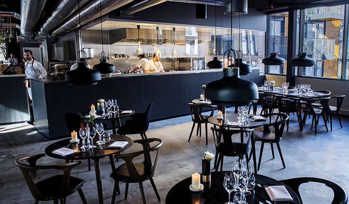

Restaurant Kontrast

Kontrast er en moderne skandinavisk restaurant like ved Mathallen, med fokus på kortreiste råvarer i sesong. Fikk i 2016 sin første Michelin-stjerne. Kjøkkensjef og medeier Mikael Svensson er stemt frem som en av de 300 beste kokkene i verden. Mikael Svennson har fått til masse med restaurant Kontrast og har stadig utviklet den moderne, skandinaviske restauranten. Kjøkkenet er få meter unna gjestene og gir en ekstra dimensjon til måltidet. Her er det stort sett økologiske, kortreiste råvarer. Som Svennson sier: «Det blir aldri bedre sluttresultat enn kvaliteten på råvaren man begynner med».